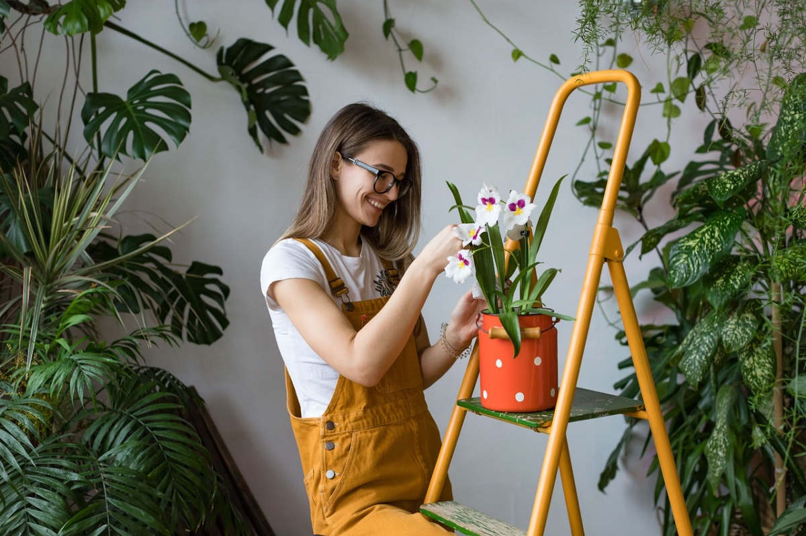

¡Bienvenidos a nuestro pequeño rincón verde del mundo!
En Plantas de la Suerte, somos apasionados amantes de las plantas y la naturaleza. Nuestra misión es inspirar y educar a todos los que comparten nuestra pasión por las plantas, desde los principiantes hasta los jardineros más experimentados. Creemos que las plantas no solo embellecen nuestro entorno, sino que también tienen el poder de mejorar nuestra calidad de vida y nuestro bienestar.
